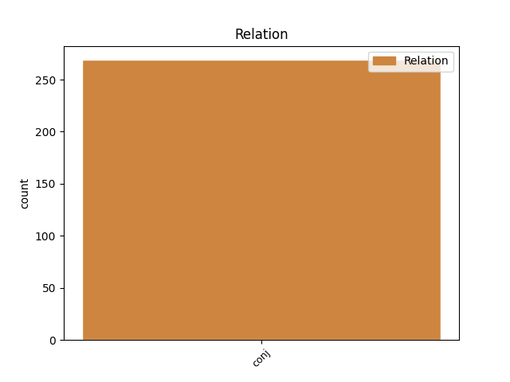
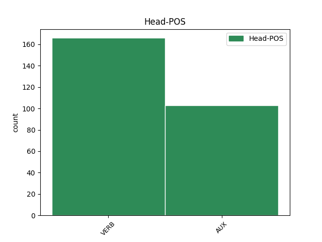
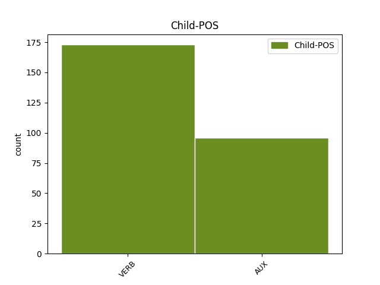

Distribution of features within this leaf



Agreement Rules sorted by frequency.
- When the dependent token is the conjunct(conj) of the head token,
1 Les _ _ _ _ 0 _ _ _
2 banquiers _ _ _ _ 0 _ _ _
3 n' _ _ _ _ 0 _ _ _
4 ont _ _ _ _ 0 _ _ _
5 jamais _ _ _ _ 0 _ _ _
6 été _ _ _ _ 0 _ _ _
7 arrêtés arrêter VERB _ Gender=Masc|Number=Plur|Tense=Past|VerbForm=Part|Voice=Pass 0 _ _ _
8 ni _ _ _ _ 0 _ _ _
9 jugés juger VERB _ Gender=Masc|Number=Plur|Tense=Past|VerbForm=Part 7 conj _ SpaceAfter=No
10 , _ _ _ _ 0 _ _ _
11 à _ _ _ _ 0 _ _ _
12 l' _ _ _ _ 0 _ _ _
13 exception _ _ _ _ 0 _ _ _
14 de _ _ _ _ 0 _ _ _
15 la _ _ _ _ 0 _ _ _
16 Chartered _ _ _ _ 0 _ _ _
17 Bank _ _ _ _ 0 _ _ _
18 qui _ _ _ _ 0 _ _ _
19 fut _ _ _ _ 0 _ _ _
20 inculpée _ _ _ _ 0 _ _ _
21 pour _ _ _ _ 0 _ _ _
22 des _ _ _ _ 0 _ _ _
23 pratiques _ _ _ _ 0 _ _ _
24 nettement _ _ _ _ 0 _ _ _
25 frauduleuses _ _ _ _ 0 _ _ _
26 . _ _ _ _ 0 _ _ _
Disagree Examples:
1 Un _ _ _ _ 0 _ _ _
2 voyage _ _ _ _ 0 _ _ _
3 étonnant _ _ _ _ 0 _ _ _
4 où _ _ _ _ 0 _ _ _
5 photos _ _ _ _ 0 _ _ _
6 , _ _ _ _ 0 _ _ _
7 réalisations _ _ _ _ 0 _ _ _
8 , _ _ _ _ 0 _ _ _
9 vieux _ _ _ _ 0 _ _ _
10 outils _ _ _ _ 0 _ _ _
11 , _ _ _ _ 0 _ _ _
12 documents _ _ _ _ 0 _ _ _
13 anciens _ _ _ _ 0 _ _ _
14 , _ _ _ _ 0 _ _ _
15 permettront _ _ _ _ 0 _ _ _
16 de _ _ _ _ 0 _ _ _
17 mesurer _ _ _ _ 0 _ _ _
18 combien _ _ _ _ 0 _ _ _
19 ce _ _ _ _ 0 _ _ _
20 petit _ _ _ _ 0 _ _ _
21 bout _ _ _ _ 0 _ _ _
22 de _ _ _ _ 0 _ _ _
23 terre _ _ _ _ 0 _ _ _
24 de _ _ _ _ 0 _ _ _
25 France _ _ _ _ 0 _ _ _
26 , _ _ _ _ 0 _ _ _
27 situé _ _ _ _ 0 _ _ _
28 à _ _ _ _ 0 _ _ _
29 les _ _ _ _ 0 _ _ _
30 Marches _ _ _ _ 0 _ _ _
31 de _ _ _ _ 0 _ _ _
32 l' _ _ _ _ 0 _ _ _
33 Est _ _ _ _ 0 _ _ _
34 , _ _ _ _ 0 _ _ _
35 lieu _ _ _ _ 0 _ _ _
36 de _ _ _ _ 0 _ _ _
37 passage _ _ _ _ 0 _ _ _
38 de _ _ _ _ 0 _ _ _
39 prédilection _ _ _ _ 0 _ _ _
40 de _ _ _ _ 0 _ _ _
41 les _ _ _ _ 0 _ _ _
42 invasions _ _ _ _ 0 _ _ _
43 , _ _ _ _ 0 _ _ _
44 fut être AUX _ Mood=Ind|Number=Sing|Person=3|Tense=Past|VerbForm=Fin 0 _ _ _
45 une _ _ _ _ 0 _ _ _
46 terre _ _ _ _ 0 _ _ _
47 de _ _ _ _ 0 _ _ _
48 labeur _ _ _ _ 0 _ _ _
49 , _ _ _ _ 0 _ _ _
50 et _ _ _ _ 0 _ _ _
51 combien _ _ _ _ 0 _ _ _
52 le _ _ _ _ 0 _ _ _
53 travail _ _ _ _ 0 _ _ _
54 de _ _ _ _ 0 _ _ _
55 ses _ _ _ _ 0 _ _ _
56 habitants _ _ _ _ 0 _ _ _
57 , _ _ _ _ 0 _ _ _
58 durs _ _ _ _ 0 _ _ _
59 à _ _ _ _ 0 _ _ _
60 la _ _ _ _ 0 _ _ _
61 tâche _ _ _ _ 0 _ _ _
62 , _ _ _ _ 0 _ _ _
63 doit devoir VERB _ Mood=Ind|Number=Sing|Person=3|Tense=Pres|VerbForm=Fin 44 conj _ _
64 être _ _ _ _ 0 _ _ _
65 reconnu _ _ _ _ 0 _ _ _
66 et _ _ _ _ 0 _ _ _
67 mis _ _ _ _ 0 _ _ _
68 en _ _ _ _ 0 _ _ _
69 valeur _ _ _ _ 0 _ _ _
70 . _ _ _ _ 0 _ _ _
1 Il _ _ _ _ 0 _ _ _
2 avait avoir AUX _ Mood=Ind|Number=Sing|Person=3|Tense=Imp|VerbForm=Fin 0 _ _ _
3 épousé _ _ _ _ 0 _ _ _
4 Denise _ _ _ _ 0 _ _ _
5 Pierrejean _ _ _ _ 0 _ _ _
6 le _ _ _ _ 0 _ _ _
7 26 _ _ _ _ 0 _ _ _
8 octobre _ _ _ _ 0 _ _ _
9 1974 _ _ _ _ 0 _ _ _
10 et _ _ _ _ 0 _ _ _
11 de _ _ _ _ 0 _ _ _
12 leur _ _ _ _ 0 _ _ _
13 union _ _ _ _ 0 _ _ _
14 , _ _ _ _ 0 _ _ _
15 sont être AUX _ Mood=Ind|Number=Plur|Person=3|Tense=Pres|VerbForm=Fin 2 conj _ _
16 nés _ _ _ _ 0 _ _ _
17 une _ _ _ _ 0 _ _ _
18 fille _ _ _ _ 0 _ _ _
19 et _ _ _ _ 0 _ _ _
20 deux _ _ _ _ 0 _ _ _
21 garçons _ _ _ _ 0 _ _ _
22 , _ _ _ _ 0 _ _ _
23 âgés _ _ _ _ 0 _ _ _
24 respectivement _ _ _ _ 0 _ _ _
25 de _ _ _ _ 0 _ _ _
26 24 _ _ _ _ 0 _ _ _
27 , _ _ _ _ 0 _ _ _
28 23 _ _ _ _ 0 _ _ _
29 et _ _ _ _ 0 _ _ _
30 14 _ _ _ _ 0 _ _ _
31 ans _ _ _ _ 0 _ _ _
32 . _ _ _ _ 0 _ _ _
1 à _ _ _ _ 0 _ _ _
2 l' _ _ _ _ 0 _ _ _
3 époque _ _ _ _ 0 _ _ _
4 , _ _ _ _ 0 _ _ _
5 ce _ _ _ _ 0 _ _ _
6 cher _ _ _ _ 0 _ _ _
7 " _ _ _ _ 0 _ _ _
8 Jo _ _ _ _ 0 _ _ _
9 " _ _ _ _ 0 _ _ _
10 élevait élever VERB _ Mood=Ind|Number=Sing|Person=3|Tense=Imp|VerbForm=Fin 0 _ _ _
11 jusqu' _ _ _ _ 0 _ _ _
12 à _ _ _ _ 0 _ _ _
13 120 _ _ _ _ 0 _ _ _
14 pigeons _ _ _ _ 0 _ _ _
15 voyageurs _ _ _ _ 0 _ _ _
16 , _ _ _ _ 0 _ _ _
17 et _ _ _ _ 0 _ _ _
18 les _ _ _ _ 0 _ _ _
19 spécialistes _ _ _ _ 0 _ _ _
20 n' _ _ _ _ 0 _ _ _
21 ont avoir AUX _ Mood=Ind|Number=Plur|Person=3|Tense=Pres|VerbForm=Fin 10 conj _ _
22 pas _ _ _ _ 0 _ _ _
23 oublié _ _ _ _ 0 _ _ _
24 que _ _ _ _ 0 _ _ _
25 l' _ _ _ _ 0 _ _ _
26 un _ _ _ _ 0 _ _ _
27 de _ _ _ _ 0 _ _ _
28 ses _ _ _ _ 0 _ _ _
29 champions _ _ _ _ 0 _ _ _
30 fut _ _ _ _ 0 _ _ _
31 de _ _ _ _ 0 _ _ _
32 loin _ _ _ _ 0 _ _ _
33 le _ _ _ _ 0 _ _ _
34 meilleur _ _ _ _ 0 _ _ _
35 sur _ _ _ _ 0 _ _ _
36 500 _ _ _ _ 0 _ _ _
37 kilomètres _ _ _ _ 0 _ _ _
38 lors _ _ _ _ 0 _ _ _
39 d' _ _ _ _ 0 _ _ _
40 un _ _ _ _ 0 _ _ _
41 retour _ _ _ _ 0 _ _ _
42 d' _ _ _ _ 0 _ _ _
43 Evreux _ _ _ _ 0 _ _ _
44 et _ _ _ _ 0 _ _ _
45 de _ _ _ _ 0 _ _ _
46 Bayeux _ _ _ _ 0 _ _ _
47 ! _ _ _ _ 0 _ _ _
1 Dès _ _ _ _ 0 _ _ _
2 sa _ _ _ _ 0 _ _ _
3 sortie _ _ _ _ 0 _ _ _
4 de _ _ _ _ 0 _ _ _
5 l' _ _ _ _ 0 _ _ _
6 école _ _ _ _ 0 _ _ _
7 primaire _ _ _ _ 0 _ _ _
8 , _ _ _ _ 0 _ _ _
9 elle _ _ _ _ 0 _ _ _
10 montait _ _ _ _ 0 _ _ _
11 à _ _ _ _ 0 _ _ _
12 Metz _ _ _ _ 0 _ _ _
13 et _ _ _ _ 0 _ _ _
14 entrait entrer VERB _ Mood=Ind|Number=Sing|Person=3|Tense=Imp|VerbForm=Fin 0 _ _ _
15 en _ _ _ _ 0 _ _ _
16 apprentissage _ _ _ _ 0 _ _ _
17 dans _ _ _ _ 0 _ _ _
18 une _ _ _ _ 0 _ _ _
19 école _ _ _ _ 0 _ _ _
20 de _ _ _ _ 0 _ _ _
21 couture _ _ _ _ 0 _ _ _
22 , _ _ _ _ 0 _ _ _
23 puis _ _ _ _ 0 _ _ _
24 revint revenir VERB _ Mood=Ind|Number=Sing|Person=3|Tense=Past|VerbForm=Fin 14 conj _ _
25 en _ _ _ _ 0 _ _ _
26 Meuse _ _ _ _ 0 _ _ _
27 après _ _ _ _ 0 _ _ _
28 la _ _ _ _ 0 _ _ _
29 Seconde _ _ _ _ 0 _ _ _
30 Guerre _ _ _ _ 0 _ _ _
31 mondiale _ _ _ _ 0 _ _ _
32 . _ _ _ _ 0 _ _ _
1 Mirecourt _ _ _ _ 0 _ _ _
2 perdit perdre VERB _ Mood=Ind|Number=Sing|Person=3|Tense=Past|VerbForm=Fin 0 _ _ _
3 trop _ _ _ _ 0 _ _ _
4 de _ _ _ _ 0 _ _ _
5 ballons _ _ _ _ 0 _ _ _
6 et _ _ _ _ 0 _ _ _
7 sur _ _ _ _ 0 _ _ _
8 ces _ _ _ _ 0 _ _ _
9 mini-rencontres _ _ _ _ 0 _ _ _
10 cela _ _ _ _ 0 _ _ _
11 ne _ _ _ _ 0 _ _ _
12 pardonne pardonner VERB _ Mood=Ind|Number=Sing|Person=3|Tense=Pres|VerbForm=Fin 2 conj _ _
13 pas _ _ _ _ 0 _ _ _
14 . _ _ _ _ 0 _ _ _